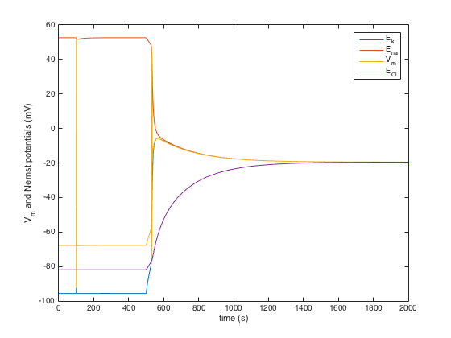
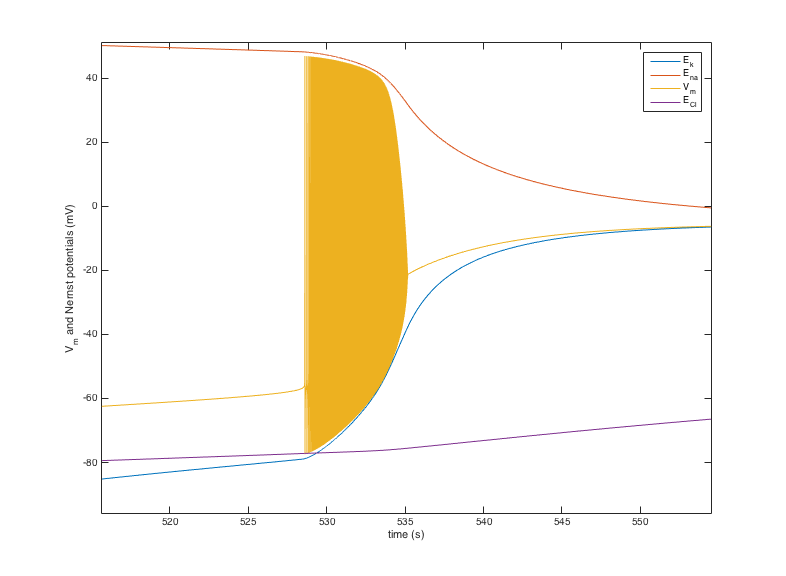

Matlab simulation of a single neuron with dynamic ion concentrations. It shows the sudden depolarization that can be observed when a neuron is not supplied with energy (ischemia). code by Bas-Jan Zandt, b.zandt@utwente.nl from the paper: Neural dynamics during anoxia and the ``Wave of Death'' (http://dx.plos.org/10.1371/journal.pone.0022127) Partially based on Cressman et al., 2009, The influence of sodium and potassium dynamics on excitability, seizures, and the stability of persistent states J Comput Neurosci 26: 159-170 Usage: Type runmodel at the matlab command prompt. After a minute or so you should see a few figures, one of which (figure 4):  contains in the area near 530 the behavior depicted in Figure 2 (left panel) in the paper: 